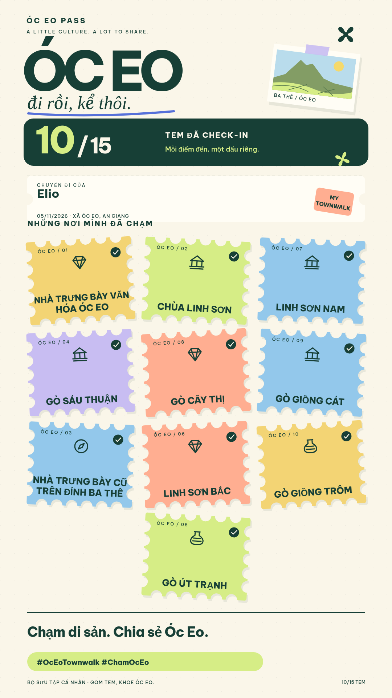

Óc Eo Pass của Elio ✦
Ảnh mẫu 10/15 tem · PNG 1080 × 1920, sẵn để đăng story.
Lưu ảnh PNG về máy ↓

Đây là ảnh mẫu bố cục, không xác nhận lượt check-in thực tế. Có 7 điểm bạn nêu và 3 điểm bổ sung tạm: Linh Sơn Bắc, Gò Giồng Trôm, Gò Út Trạnh. Tem nhà trưng bày cũ xuất hiện theo yêu cầu trong mẫu; chưa thay đổi điều kiện nhận tem của ứng dụng.
Mở Óc Eo Townwalk ↗